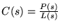

|
You are here : Control
System Design - Index | Book Contents |
Chapter 7
7. Classical PID Control
Preview
In Chapter 5 it was shown how feedback control loop
performance and stability can be characterized using a set of four
sensitivity functions. A key feature of these functions is that all of
them have poles belonging to the same set, the set of closed loop
poles. Hence, this set determines stability and the natural modes of
the closed loop. A key synthesis question is therefore: given a model, can
one systematically synthesize a controller such that the closed loop
poles are in predefined locations? This chapter will show that this
is indeed possible. We call this pole assignment, which is a
fundamental idea in control synthesis.
In this chapter we will use a polynomial description.
This evolves naturally from the analysis in Chapter 5. In a later
chapter we will use a state space description. This will provide a
natural transition from SISO to MIMO control systems in later chapters.
It is also shown how both approaches can accommodate
other design requirements such as zero steady state tracking errors and
disturbance rejection.
Finally, PID controllers are placed into this general
framework and it is shown how they may be synthesized using pole
assignment methods.
The question of how to choose a set of values for the
closed loop poles to meet the required performance specifications is, of
course, a crucial issue. This is actually a non-trivial question which
needs to be considered as part of the intricate web of design trade-offs
associated with all feedback loops. The latter will be taken up in the
next chapter, where the design problem will be analyzed.
Summary
- This chapter addresses the question of synthesis and asks:
Given the model
,
how can one synthesize a controller,

such that the closed loop has a particular property.
- Recall:
- the poles have a profound impact on the dynamics of a transfer
function;
- The poles of the four sensitivities governing the closed loop
belong to the same set, namely the roots of the characteristic
equation
Ao(s)L(s) + Bo(s)P(s) = 0.
- Therefore, a key synthesis question is: Given a model, can one
synthesize a controller such that the closed loop poles (i.e.
sensitivity poles) are in pre-defined locations?
- Stated mathematically:
Given polynomials
Ao(s),Bo(s)
(defining the model) and given a polynomial Acl(s)
(defining the desired location of closed loop poles), is it possible
to find polynomials P(s) and L(s) such
that
Ao(s)L(s) + Bo(s)P(s) = Acl(s)?
This chapter shows that this is indeed possible.
- The equation
Ao(s)L(s) + Bo(s)P(s) = Acl(s)
is known as a Diophantine equation.
- Controller synthesis by solving the Diophantine equation is known
as pole placement. There are several efficient algorithms as
well as commercial software to do so.
- Synthesis ensures that the emergent closed loop has particular
constructed properties.
- However, the overall system performance is determined by a
number of further properties which are consequences of
the constructed property.
- The coupling of constructed and consequential properties
generates trade-offs.
- Design is concerned with
- efficiently detecting if there is no solution that meets the
design specifications adequately and what the inhibiting factors
are
- choosing the constructed properties such that, whenever
possible, the overall behavior emerging from the interacting
constructed and the consequential properties meets the design
specifications adequately.
- This is the topic of the next chapter.
|